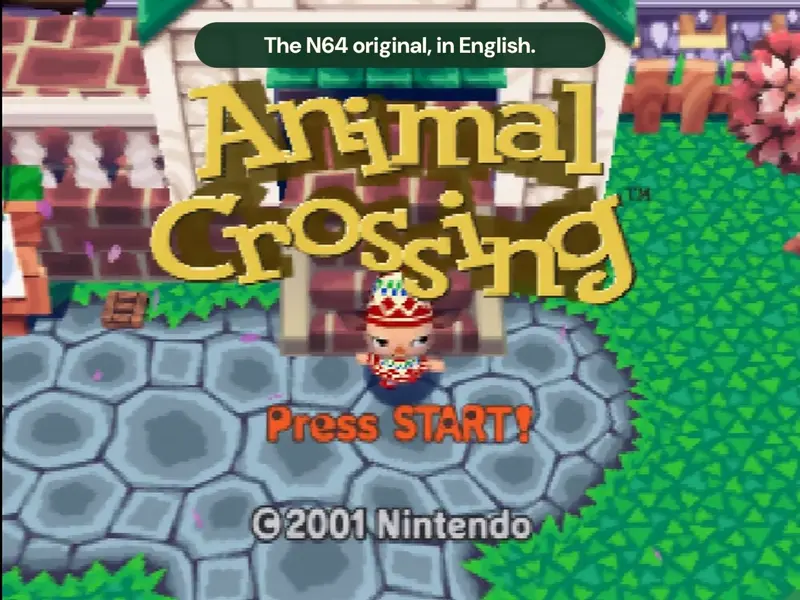

Expansion Pak
8 MiB of memory is required.
A LITTLE TOWN. A WHOLE NEW WORLD.
Meet your neighbours. Find your favourite fishing spot. Get a little too attached to a tiny house.
Experience Animal Crossing’s Nintendo 64 beginnings in English, with translated dialogue, menus, and artwork, plus an English keyboard inspired by the N64 controller.

Choose your Japanese N64 ROM and English GameCube disc image to create an English N64 ROM.
Files stay on your device. Nothing is uploaded.
Japan · Original, unpatched ROM · 16 MiB
No file chosen .z64, .v64, or .n64USA / Canada · GAFE01, revision 0
No file chosen .iso, .gcm, or .cisoHave a .7z or .zip? Extract it first. For RVZ, use Dolphin to convert it to ISO.
Loading the patcher…
Your English ROM is ready and has passed verification.
Download English ROM Download patch detailsBEFORE YOU PACK YOUR BAGS
8 MiB of memory is required.
Select this save type if your flashcart asks.
Your flashcart needs RTC support.
Keep a backup of any existing saves before playing a patched game.
THERE’S PLENTY TO DO HERE
From your first hello to a letter from home — a familiar world, in your language.
COMMON QUESTIONS
The Japanese N64 game is the base for the patch. The English GameCube game provides text and artwork used in the translation. You’ll get a new N64 ROM; your GameCube game stays unchanged. You need to supply both games yourself.
The patcher checks both games automatically. To compare files yourself, use the MD5 checksums below. Hash the extracted game file, not its .7z or .zip archive.
16,777,216 bytes. Each N64 byte order has its own checksum:
a4f7c57c180297b2e7ba5a5feb44fe0ba6ef34bd225f22bbf737d61b839ae1b05a6a8590b4a318b7374a6d216c5914c6Game ID GAFE01, revision 0. Match your file to one of these MD5s:
7853049ccd0c1e2bffeb5b12393a54097ede3658d87319b64cdbd5ae90a2f32d3e5a8787c5c2f20f08532edc4cb825c0Full-disc reference: GameTDB. The scrubbed ISO and CISO above are verified with this patcher.
No. Patching happens in your browser, with no uploads or accounts. Your original files are never overwritten, and the patcher doesn’t read or change your saves.
Check the game, region, and revision against the details above. Use an unpatched N64 ROM, and extract .7z or .zip archives first. For RVZ, GCZ, or NKit images, convert to a full ISO in Dolphin. The error message will tell you which file needs attention.
Download the finished .z64 file and open it in an N64 emulator, or copy it to a compatible flashcart. On original hardware, you’ll need an Expansion Pak, FlashRAM saves, and real-time clock support.